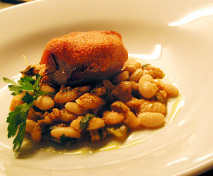

Schweinsfilet an Senfkruste mit Barlotti-Bohnen
5,5 von 6Siehe Giorgio Locatelli (Made in Italy, das Kochbuch)
Seite 479-480, bzw Querverweis auf Seite 183.

Siehe Giorgio Locatelli (Made in Italy, das Kochbuch)
Seite 479-480, bzw Querverweis auf Seite 183.

Montagsplausch Nr. 281. Der Abend hiess «Das verflixte 7 Jahr».